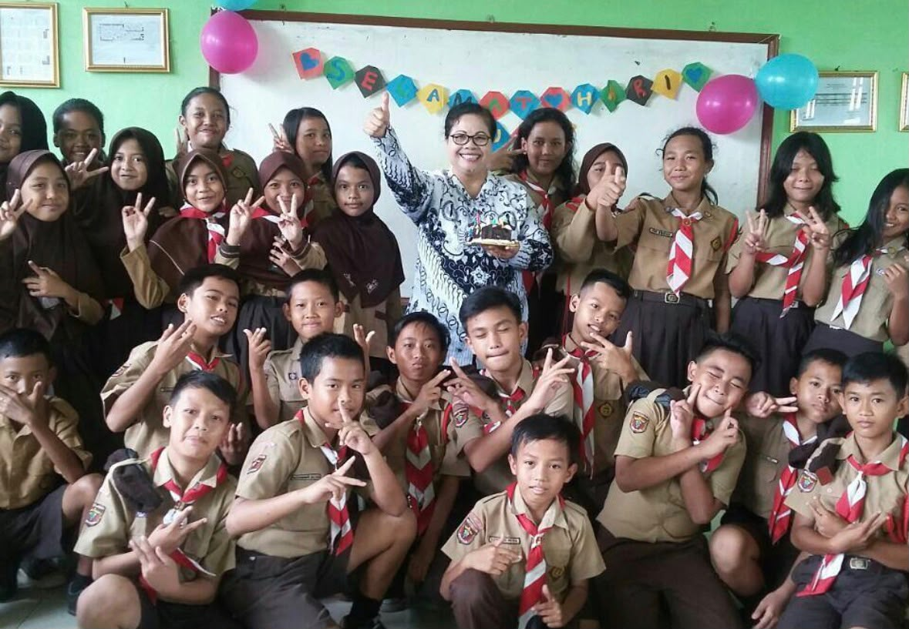
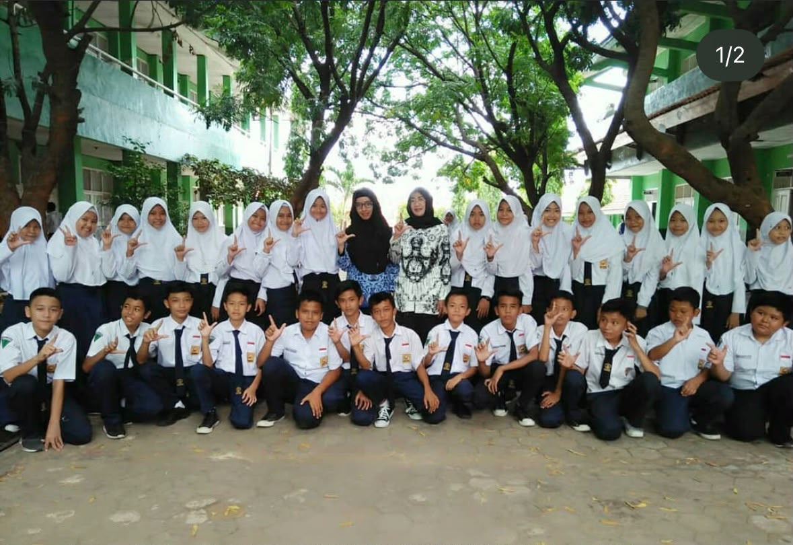
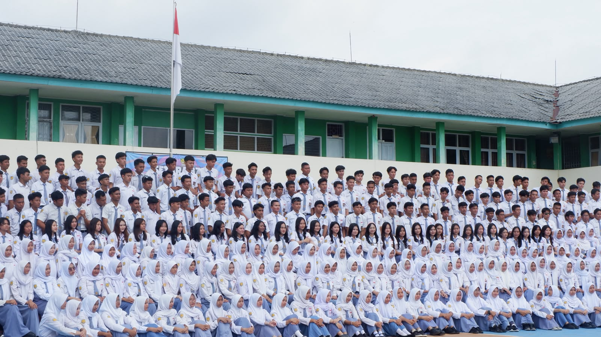
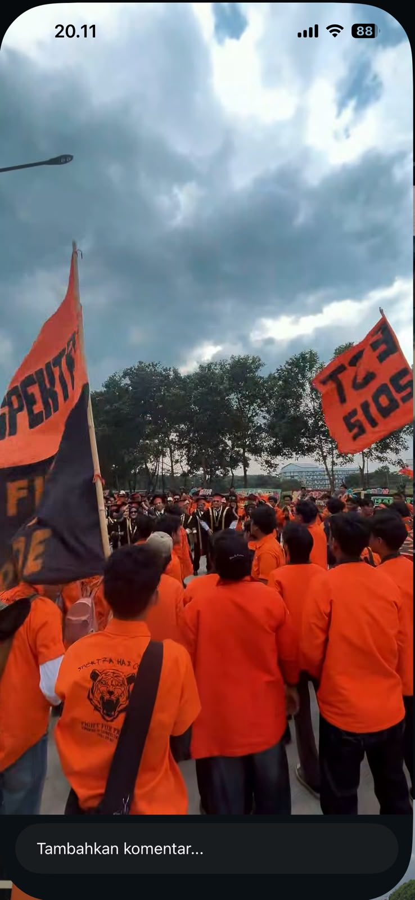

Perjalanan belajar dan berkembang untuk meraih cita-cita ♡
Perjalanan pendidikan saya dari sekolah dasar hingga perguruan tinggi.

Sekolah Dasar Negeri 1 Palapa, tempat saya memulai perjalanan pendidikan dan mengenal berbagai hal untuk pertama kalinya.

Masa pendidikan yang memberikan banyak pengalaman, pembelajaran, dan kesempatan untuk terus berkembang.

Tahap pendidikan yang menjadi bekal untuk melanjutkan perjalanan ke jenjang pendidikan yang lebih tinggi.

Program Studi Geomatika. Saat ini saya sedang melanjutkan pendidikan untuk mengembangkan ilmu, pengalaman, dan meraih cita-cita saya.